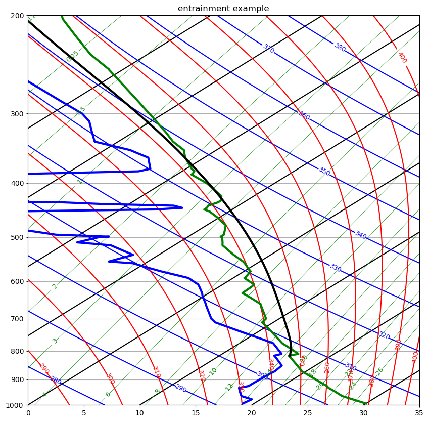

Modeling an entraining cloud updraft try#
This notebook calculates the time evolution of four variables:
[velocity, height, \(\theta_{ecld}\), \(r_{Tcloud}\) ]
in a rising, entraining cloud with constant entrainment rate. The environment is specified from a Wyoming sounding, and interpolated each timestep using scipy.interpolate.interp1d
The variables are intergrated with respect to time using scipy.integrate.RK45
Download entraining_plume.ipynb
import numpy as np
import pandas as pd
from functools import partial
from pprint import pformat
from a405.thermo.constants import constants as c
from a405.thermo.thermlib import find_Tmoist,find_rsat,find_thetaep
from scipy.interpolate import interp1d
from scipy.integrate import RK45
from a405.soundings.wyominglib import write_soundings, read_soundings
import json
import xarray as xr
import os
import matplotlib.pyplot as plt
from a405.skewT.nudge import nudge
Find the derivatives wrt time of each of the 4 variables#
See entrain.pdf notes. We want to integrate to find \([\theta_e, r_T, w_{vel}, z]\) for the ascending cloud parcel.
The equations:
Note that we really should be mixing \(\log \theta_e\), not \(\theta_e\) (why?). We’ll see whether that makes a difference later.
For the entrainment calculation, we need environmental temperature, dewpoint and pressure at arbitrary heights. Use scipy.interpolate.interp1d for this
Specify the derivative function#
def derivs(t, y, entrain_rate=None, tinterp=None, tdinterp = None, pinterp=None):
"""Function that computes the derivative vector for the ode integrator
Parameters
----------
t: float
time (s)
y: vector
4-vector containing wvel (m/s), height (m), thetae (K), rt (kg/kg)
entrain_rate: float
1/m dm/dt (s-1)
tinterp: func
interp1d function for environmental temperature T(z)
tdinterp: func
interp1d function for environmental dewpoint temperature Td(z)
pinterp: func
interp1d function for presusure p(z)
Returns
-------
yp: vector
4-vector containing time derivatives of wvel (m/s^2), height (m/s), thetae (K/s), rt (kg/kg/s)
"""
#print(f"inside derivs")
#print(f"{y=}")
yp = np.zeros((4,),dtype=float)
velocity = y[0]
height = y[1]
thetae_cloud = y[2]
rt_cloud = y[3]
#
# fill the yp (yprime) vector with the derivatives
#
# yp[0] is the acceleration, in this case the buoyancy
#
yp[0] = calcBuoy(height, thetae_cloud, tinterp, tdinterp, pinterp)
press = pinterp(height)*100. #Pa
Tdenv = tdinterp(height) + c.Tc #K
Tenv = tinterp(height) + c.Tc #K
rtenv = find_rsat(Tdenv, press) #kg/kg
thetaeEnv = find_thetaep(Tdenv,Tenv, press)
#
# yp[1] is the rate of change of height
#
yp[1] = velocity
#
# yp[2] is the rate of change of thetae_cloud
#
yp[2] = entrain_rate*(thetaeEnv - thetae_cloud)
#
# yp[3] is the rate of change of rt_cloud
#
yp[3] = entrain_rate*(rtenv - rt_cloud)
#print(f" derivs returning")
#print(f"{yp=}")
return yp
Find the buoyancy from the cloud and environment \(\theta_e\) and \(r_T\)#
def calcBuoy(height, thetae0, tinterp, tdinterp, pinterp):
"""function to calculate buoyant acceleration for an ascending saturated parcel
this version neglects liquid water loading
Parameters
----------
height: float
parcel height (m)
thetae0: float
parcel thetae (K)
tinterp: func
interp1d function for environmental temperature T(z)
tdinterp: func
interp1d function for environmental dewpoint temperature Td(z)
pinterp: func
interp1d function for presusure p(z)
Returns
-------
buoy: float
buoyancy (m/s/s)
"""
#input: height (m), thetae0 (K), plus function handles for
#T,Td, press soundings
#output: Bout = buoyant acceleration in m/s^2
#neglect liquid water loading in the virtual temperature
press=pinterp(height)*100.#%Pa
Tcloud=find_Tmoist(thetae0,press) #K
rvcloud=find_rsat(Tcloud,press); #kg/kg
Tvcloud=Tcloud*(1. + c.eps*rvcloud)
Tenv=tinterp(height) + c.Tc
Tdenv=tdinterp(height) + c.Tc
#print(f"inside buoy {(height,Tenv,Tdenv,press)=}")
rvenv=find_rsat(Tdenv,press); #kg/kg
Tvenv=Tenv*(1. + c.eps*rvenv)
TvDiff=Tvcloud - Tvenv
buoy = c.g0*(TvDiff/Tvenv)
return buoy
Define the integrator function#
Use scipy.integrate.RK45 to integrate our system of 4 odes
def integ_entrain(df_sounding,entrain_rate,wvel_init,press_init,integ_time=2500,time_interval=10):
"""integrate an ascending parcel given a constant entrainment rate
this version hardwired to start parcel at 800 hPa with cloud base
values of environment at 900 hPa
Parameters
----------
df_sounding: pandas dataframe
: cloumns are temperature, dewpoint, height, press
entrain_rate: float
1/m dm/dt (s-1)
wvel_init: float
initial vertical velocity (m/s)
press_init: float
initial parcel pressure level (hPa)
integ_time: float (optional, default=2500 s)
total integration time (s)
time_interval: float (optional, default = 10 s)
recording interval for output
Returns
-------
df_out: dataframe
dataframe containing wvel (m/s) ,cloud_height (m) , thetae (K), rt (kg/kg) for assending parcel
interpPress: func
interp1d function for presusure p(z) (used for plotting)
"""
press = df_sounding['pres'].values
height = df_sounding['hght'].values
temp = df_sounding['temp'].values
dewpoint = df_sounding['dwpt'].values
#
#
#
envHeight= nudge(height)
interpTenv = interp1d(envHeight,temp)
interpTdEnv = interp1d(envHeight,dewpoint)
interpPress = interp1d(envHeight,press)
print("here i am and the temp is ",interpTenv(3000),interpPress(3000))
args=dict(entrain_rate = entrain_rate,
tinterp=interpTenv,
tdinterp=interpTdEnv,
pinterp=interpPress)
#
# use functools.partial to supply the extra arguments to the derivs function
# this changes the derivs function signature from
#
# derivs(t, y, entrain_rate=None, tinterp=None, tdinterp = None, pinterp=None)
#
# to
#
# the_derivs(t,y)
#
# as required by the RK45 integrator
#
#
the_derivs = partial(derivs,**args)
#
# find the initial toral water mixing ratio and thetae at press_init
#
pinit_level = len(press) - np.searchsorted(press[::-1],press_init)
rtcloud = find_rsat(dewpoint[pinit_level] + c.Tc, press[pinit_level]*100.)
thetaeVal=find_thetaep(dewpoint[pinit_level] + c.Tc,
temp[pinit_level] + c.Tc,press[pinit_level]*100.)
#
# start the parcel with initial vertical velocity wvel_init
#
#
height_init=height[pinit_level]
yinit = [wvel_init, height_init, thetaeVal, rtcloud]
tinit = 0 #seconds
dt = time_interval #seconds
output_times = np.arange(tinit, integ_time, dt)
#
# want to integrate derivs using dopr15 runge kutta described at
# http://docs.scipy.org/doc/scipy/reference/generated/scipy.integrate.ode.html
#
init_vals = (yinit, tinit)
rk45 = RK45(the_derivs, tinit, yinit, t_bound=integ_time, max_step=dt)
yout = []
while rk45.status == "running":
#
# stop if wvel < 0
#
if rk45.y[0] < 0:
break
press = interpPress(rk45.y[1])*100.
yvals= [rk45.t,press]
yvals.extend(rk45.y)
yout.append(yvals)
rk45.step()
#
# convert the output into a pandas dataframe
#
colnames=['time','press','wvel','cloud_height','thetae_cloud','rt_cloud']
df_out=pd.DataFrame.from_records(yout,columns=colnames)
df_out = df_out.set_index('time',drop=False)
return df_out
Read in a sounding to set the environment#
from a405.soundings.wyominglib import write_soundings
from pathlib import Path
curr_dir = Path()
stem = 'little_rock_july'
sounding_dir = (curr_dir / stem ).absolute()
station = '72340'
year = '2012'
month = '7'
values=dict(region='naconf',year=year,month=month,start='0100',stop='3000',station=station)
write = False
if write:
write_soundings(values, sounding_dir)
soundings= read_soundings(sounding_dir)
else:
soundings= read_soundings(sounding_dir)
day = 9
hour = 0
the_time=(2012,7,day,hour)
output_filename = curr_dir / f"little_rock_july_{day:d}.nc"
sounding=soundings['sounding_dict'][the_time]
Do the integration#
Initial conditions#
entrain_rate = 15.e-4 #s^{-1}
wvel_init = 2
press_init = 820
df = integ_entrain(sounding,entrain_rate,wvel_init,press_init,integ_time=5000,time_interval=10)
here i am and the temp is 9.364630225080386 715.6533762057878
/Users/phil/repos/a405/src/a405/thermo/thermlib.py:469: RuntimeWarning: invalid value encountered in log
s = cp * np.log(T) - c.Rd * np.log(pd) + lv * rv / T - vapor_term
df
| time | press | wvel | cloud_height | thetae_cloud | rt_cloud | |
|---|---|---|---|---|---|---|
| time | ||||||
| 0.000000 | 0.000000 | 81600.000000 | 2.000000 | 1891.000000 | 346.519355 | 0.013179 |
| 0.319697 | 0.319697 | 81593.904844 | 2.003717 | 1891.639991 | 346.519362 | 0.013179 |
| 3.516669 | 3.516669 | 81532.393728 | 2.034977 | 1898.098659 | 346.520191 | 0.013179 |
| 13.516669 | 13.516669 | 81336.423359 | 2.062642 | 1918.675547 | 346.531836 | 0.013181 |
| 23.516669 | 23.516669 | 81142.865735 | 1.984770 | 1938.999098 | 346.557177 | 0.013185 |
| ... | ... | ... | ... | ... | ... | ... |
| 873.516669 | 873.516669 | 18162.034517 | 9.648099 | 13071.292855 | 343.178518 | 0.007304 |
| 883.516669 | 883.516669 | 17926.739236 | 7.397479 | 13156.517366 | 343.298835 | 0.007196 |
| 893.516669 | 893.516669 | 17753.503388 | 5.153350 | 13219.263803 | 343.418883 | 0.007089 |
| 903.516669 | 903.516669 | 17642.065925 | 2.921982 | 13259.626717 | 343.538296 | 0.006984 |
| 913.516669 | 913.516669 | 17591.968036 | 0.711296 | 13277.772292 | 343.656619 | 0.006880 |
94 rows × 6 columns
Convert the dataframe to xarray#
the_ds = df.to_xarray()
the_ds
<xarray.Dataset> Size: 5kB
Dimensions: (time: 94)
Coordinates:
* time (time) float64 752B 0.0 0.3197 3.517 ... 893.5 903.5 913.5
Data variables:
press (time) float64 752B 8.16e+04 8.159e+04 ... 1.764e+04 1.759e+04
wvel (time) float64 752B 2.0 2.004 2.035 ... 5.153 2.922 0.7113
cloud_height (time) float64 752B 1.891e+03 1.892e+03 ... 1.328e+04
thetae_cloud (time) float64 752B 346.5 346.5 346.5 ... 343.4 343.5 343.7
rt_cloud (time) float64 752B 0.01318 0.01318 ... 0.006984 0.00688Add units to the variables plus dataset attributes#
cloud_temp=[]
cloud_dewpoint=[]
for the_thetae,the_press in zip(the_ds.thetae_cloud.data,
the_ds.press.data):
cloud_temp.append(find_Tmoist(the_thetae,the_press))
cloud_temp = np.array(cloud_temp)
cloud_temp = xr.DataArray(data = cloud_temp, dims={'time':len(cloud_temp)})
cloud_temp = cloud_temp.assign_attrs(units = 'K')
the_ds["cloud_temp"] = cloud_temp
the_ds = the_ds.set_coords(['cloud_height','press'])
the_ds['press'] = the_ds['press'].assign_attrs(units = 'Pa')
the_ds['cloud_height'] = the_ds['cloud_height'].assign_attrs(units = 'm')
the_ds['wvel'] = the_ds['wvel'].assign_attrs(units = 'm/s')
the_ds['thetae_cloud'] = the_ds['thetae_cloud'].assign_attrs(units = 'K')
the_ds['rt_cloud'] = the_ds['rt_cloud'].assign_attrs(units = 'kg/kg')
tephigram_skew = 35
the_ds.attrs = {'history': ' written by entraining_plume.ipynb',
'entrainment_rate':entrain_rate,
'entrainment_units':'s^{-1}',
'tephigram_skew' :tephigram_skew,
'sounding_dir' : str(sounding_dir),
'sounding_time':the_time,
'station':station}
/Users/phil/repos/a405/src/a405/thermo/thermlib.py:469: RuntimeWarning: invalid value encountered in log
s = cp * np.log(T) - c.Rd * np.log(pd) + lv * rv / T - vapor_term
the_ds
<xarray.Dataset> Size: 5kB
Dimensions: (time: 94)
Coordinates:
* time (time) float64 752B 0.0 0.3197 3.517 ... 893.5 903.5 913.5
press (time) float64 752B 8.16e+04 8.159e+04 ... 1.764e+04 1.759e+04
cloud_height (time) float64 752B 1.891e+03 1.892e+03 ... 1.328e+04
Data variables:
wvel (time) float64 752B 2.0 2.004 2.035 ... 5.153 2.922 0.7113
thetae_cloud (time) float64 752B 346.5 346.5 346.5 ... 343.4 343.5 343.7
rt_cloud (time) float64 752B 0.01318 0.01318 ... 0.006984 0.00688
cloud_temp (time) float64 752B 289.5 289.5 289.4 ... 209.6 209.3 209.2
Attributes:
history: written by entraining_plume.ipynb
entrainment_rate: 0.0015
entrainment_units: s^{-1}
tephigram_skew: 35
sounding_dir: /Users/phil/repos/a405/notebooks/worksheets/little_ro...
sounding_time: (2012, 7, 9, 0)
station: 72340Add the environment variables#
env_height = xr.DataArray(data = sounding['hght'], dims={'envlevs':len(sounding)})
env_height = env_height.assign_attrs(units = 'm')
the_ds["env_height"] = env_height
env_thetae = xr.DataArray(data = sounding['thte'], dims={'envlevs':len(sounding)})
env_thetae = env_thetae.assign_attrs(units = 'K')
the_ds["env_thetae"] = env_thetae
env_temp = xr.DataArray(data = sounding['temp'], dims={'envlevs':len(sounding)})
env_temp = env_temp.assign_attrs(units = 'degC')
the_ds["env_temp"] = env_temp
env_dewpoint = xr.DataArray(data = sounding['dwpt'], dims={'envlevs':len(sounding)})
env_dewpoint = env_dewpoint.assign_attrs(units = 'degC')
the_ds["env_dewpoint"] = env_dewpoint
env_press = xr.DataArray(data = sounding['pres'], dims={'envlevs':len(sounding)})
env_press = env_press.assign_attrs(units = 'hPa')
the_ds["env_press"] = env_press
the_ds
<xarray.Dataset> Size: 10kB
Dimensions: (time: 94, envlevs: 93)
Coordinates:
* time (time) float64 752B 0.0 0.3197 3.517 ... 893.5 903.5 913.5
press (time) float64 752B 8.16e+04 8.159e+04 ... 1.764e+04 1.759e+04
cloud_height (time) float64 752B 1.891e+03 1.892e+03 ... 1.328e+04
* envlevs (envlevs) int64 744B 0 1 2 3 4 5 6 7 ... 86 87 88 89 90 91 92
Data variables:
wvel (time) float64 752B 2.0 2.004 2.035 ... 5.153 2.922 0.7113
thetae_cloud (time) float64 752B 346.5 346.5 346.5 ... 343.4 343.5 343.7
rt_cloud (time) float64 752B 0.01318 0.01318 ... 0.006984 0.00688
cloud_temp (time) float64 752B 289.5 289.5 289.4 ... 209.6 209.3 209.2
env_height (envlevs) float64 744B 172.0 326.0 ... 1.661e+04 1.667e+04
env_thetae (envlevs) float64 744B 345.9 346.8 343.3 ... 383.5 391.4 392.8
env_temp (envlevs) float64 744B 30.0 28.2 26.8 ... -72.3 -69.9 -69.7
env_dewpoint (envlevs) float64 744B 19.0 19.2 17.8 ... -81.3 -78.9 -79.7
env_press (envlevs) float64 744B 994.0 977.0 964.0 ... 104.0 101.0 100.0
Attributes:
history: written by entraining_plume.ipynb
entrainment_rate: 0.0015
entrainment_units: s^{-1}
tephigram_skew: 35
sounding_dir: /Users/phil/repos/a405/notebooks/worksheets/little_ro...
sounding_time: (2012, 7, 9, 0)
station: 72340write the dataset to netcdf#
if os.path.exists(output_filename):
os.remove(output_filename)
the_ds.to_netcdf(output_filename)
print(f"write netcdf file {str(output_filename.absolute())}")
write netcdf file /Users/phil/repos/a405/notebooks/worksheets/little_rock_july_9.nc
Plot the result on a tephigram#
from a405.thermo.constants import constants as c
from a405.thermo.thermlib import convertSkewToTemp, convertTempToSkew
from a405.skewT.fullskew import makeSkewWet,find_corners,make_default_labels
pa2hPa = 0.01
fig,ax =plt.subplots(1,1,figsize=(10,10))
corners = [0, 35]
ax, skew = makeSkewWet(ax, corners=corners, skew=tephigram_skew)
xcorners=find_corners(corners,skew=skew)
ax.set(xlim=xcorners,ylim=[1000,200])
ax.set_title("entrainment example")
xcoord_envtemp = convertTempToSkew(sounding['temp'],sounding['pres'],tephigram_skew)
xcoord_envdew = convertTempToSkew(sounding['dwpt'],sounding['pres'],tephigram_skew)
xcoord_cloud = convertTempToSkew(cloud_temp - c.Tc,the_ds['press']*pa2hPa,tephigram_skew)
ax.plot(xcoord_envtemp,sounding['pres'],'g-',linewidth=3)
ax.plot(xcoord_envdew,sounding['pres'],'b-',linewidth=3);
ax.plot(xcoord_cloud,the_ds['press']*pa2hPa,'k-',linewidth=3);
